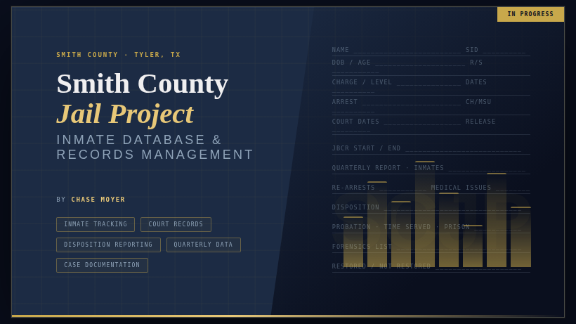

Hi, I'm Chase Moyer
CS Student @ UT Tyler | Full Stack Learner
See My WorkAbout
Hi, I'm Chase Moyer, a current computer science student at the University of Texas at Tyler who has a passion for building clean, functional, and impactful solutions.
I have developed a solid foundation in Java, and SQL, while actively expanding my skills in HTML, CSS, and JavaScript. I enjoy the problem-solving nature of software development and take pride in writing code that is both efficient and maintainable.
I have recently taken on an internship with Boost Creative Solutions as a Web Developer intern where I will continue my education and gain valuable experience in web development.
Projects
Smith County Jail Project

- Designing and developing a non-relational database system using MongoDB to organize inmate records and improve data accessibility for the Smith County Jail.
- Architecting the database schema to support efficient querying and scalability for a real-world county-level application.
- Building toward a full-stack implementation using JavaScript and Node.js to connect the MongoDB backend to a functional user interface.
- Collaborating within UT Tyler's AI Apprenticeship Program on a live civic technology project with real institutional stakeholders.
Project 2
Description of Project 2
Project 3
Description of Project 3
Contact
Email: chase.a.moyer02@gmail.com
Phone Number: (512) 968–3540
LinkedIn: LinkedIn
GitHub: GitHub